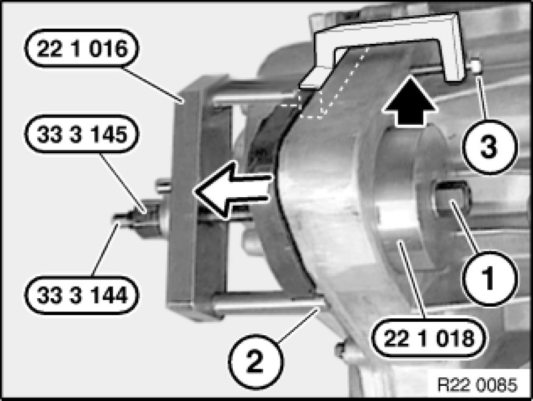
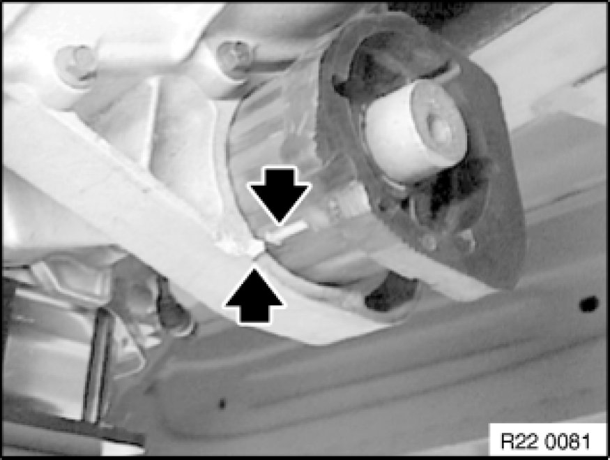
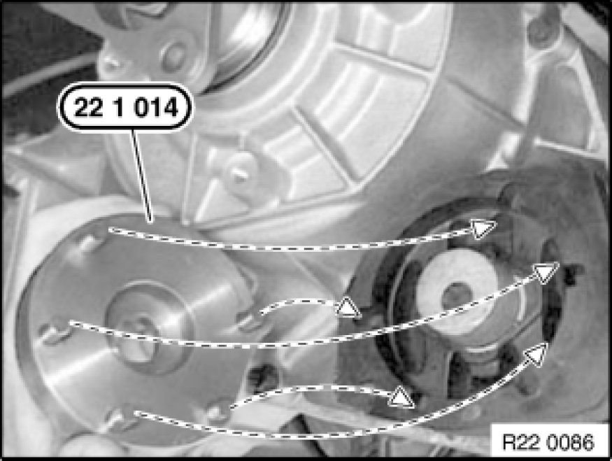
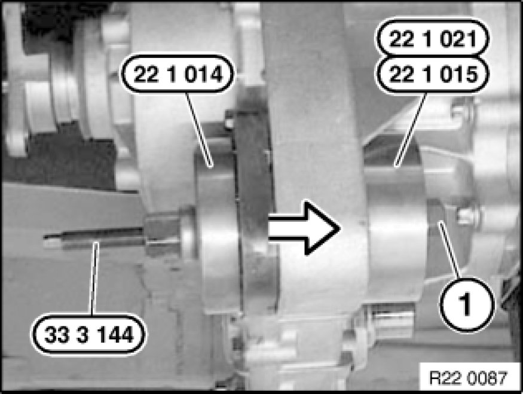

Replacing Rubber Mount for Transmission Mounting
22 32 001 - Replacing rubber mount for transmission mounting

Special tools required:
- 22 1 011
- 22 1 014 Tools and Equipment
- 22 1 016 Tools and Equipment
- 22 1 021 Tools and Equipment
- 33 3 144

Necessary preliminary tasks:
- Remove transfer box Removing And Installing Transfer Case (ATC 400 X-Drive)

Position special tool 22 1 016 Tools and Equipment on opening (2) and twist in screw (3) hand-tight against housing.
Pull out rubber mount with special tools 22 1 011 / 33 3 144 and nut (1).
Nut (1) = M 12x1.5 nut

Installation Note:
Arrow on rubber mount must point to arrow on housing.
Coat housing bore and rubber mount with Circolight, refer to BMW Parts Service.

Insert special tool 22 1 014 Tools and Equipment with pins into openings of rubber mount.

Draw in rubber mount with special tools 22 1 014 Tools and Equipment / 22 1 021 Tools and Equipment / 33 3 144 and nut (1).
Nut (1) = M12x1.5